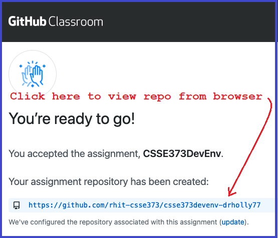
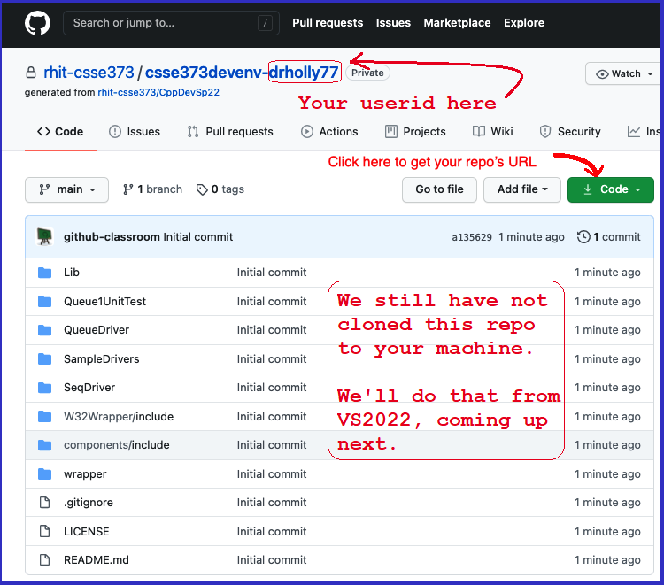

Creating the CSSE373 Repo
- In CSSE373 some of the software you will be developing will be pushed to a repo for grading
- The 5 steps below walk you through setting up your individual repo for the class
1. Follow the link to GitHub Classrom
- Steps 2 through 5 below provide instructions for what to do when you follow the GitHub Classroom link
- Link to GitHub Classroom
2. Accept the assignment from GitHub Classroom

3. Refresh your browser screen after repo configuration

4. Your individual repo is ready

5. View your repo from your browser
